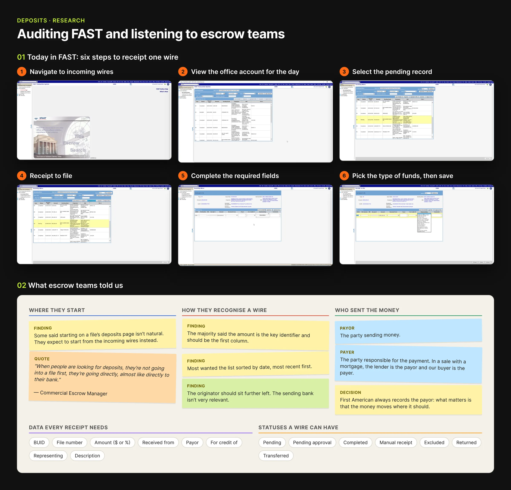
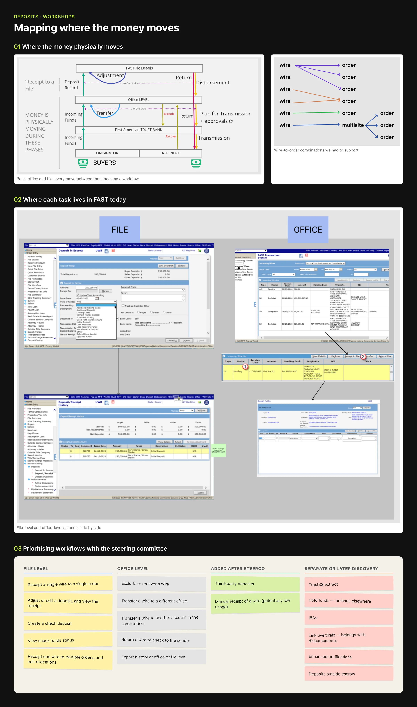
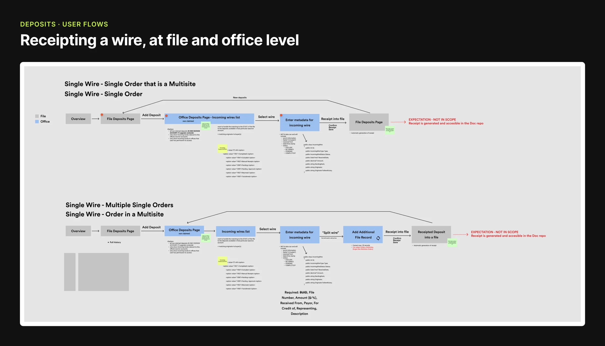
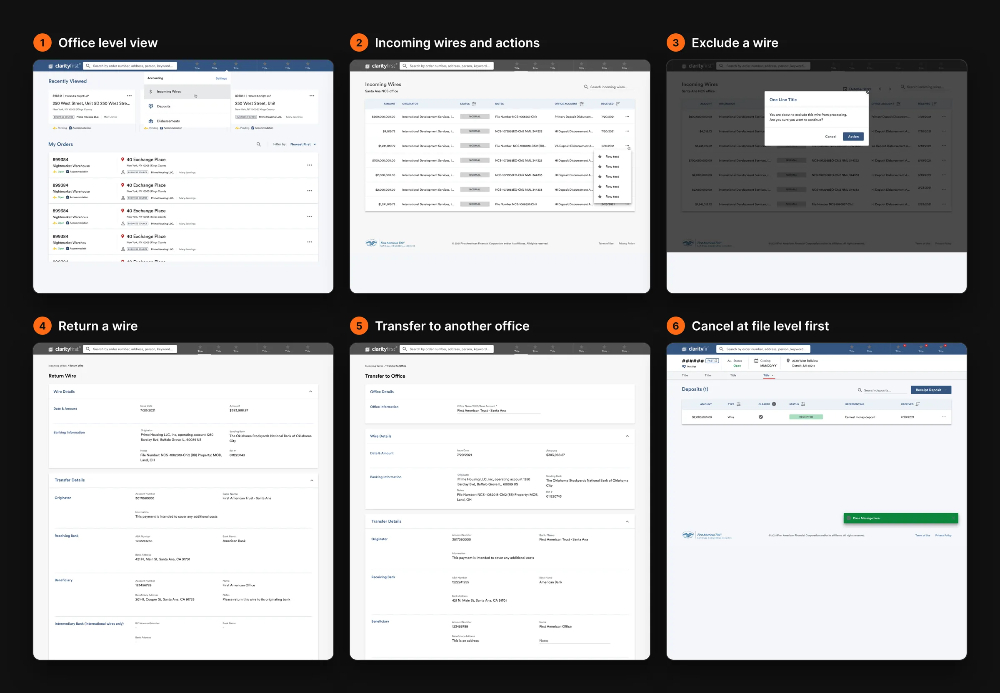
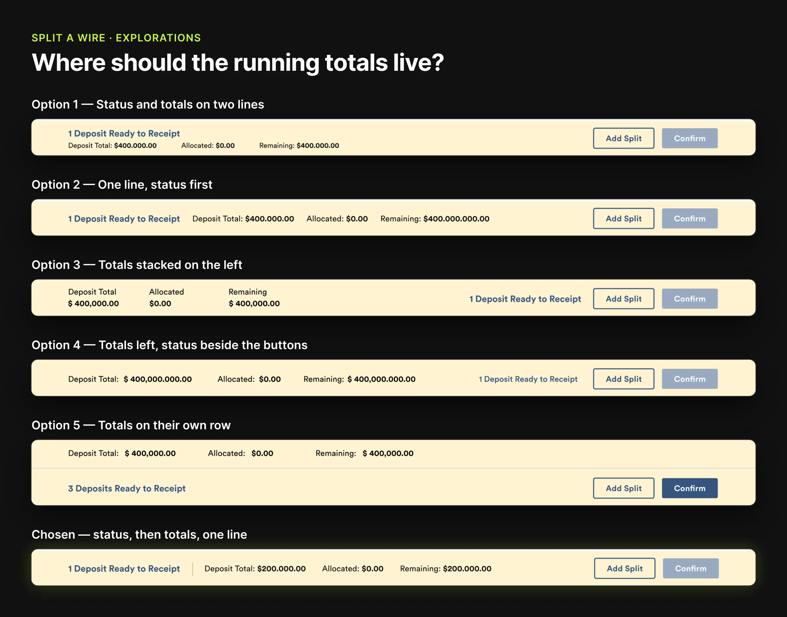
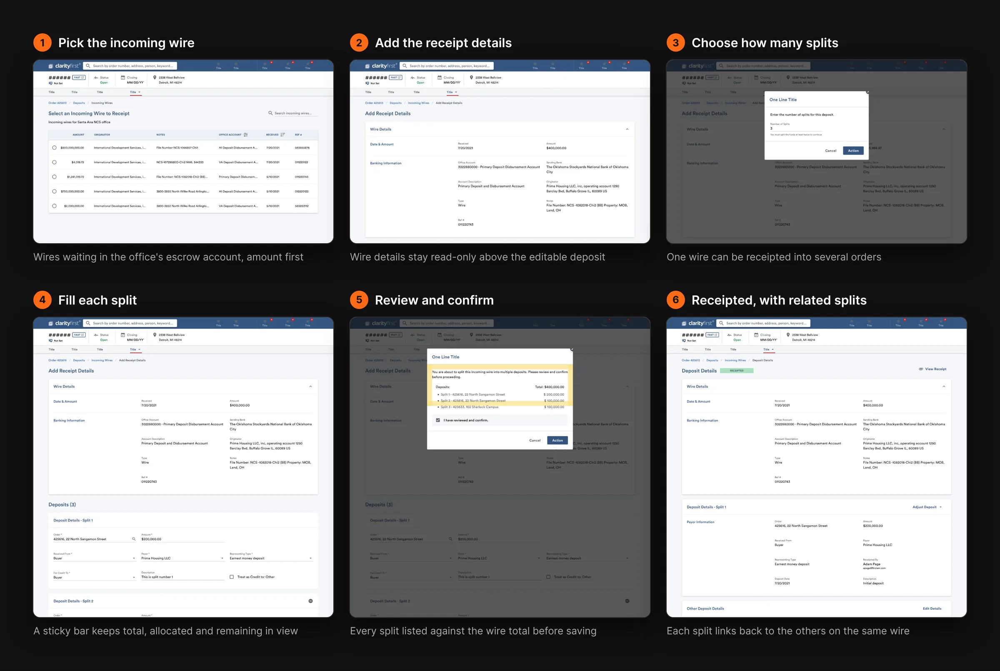
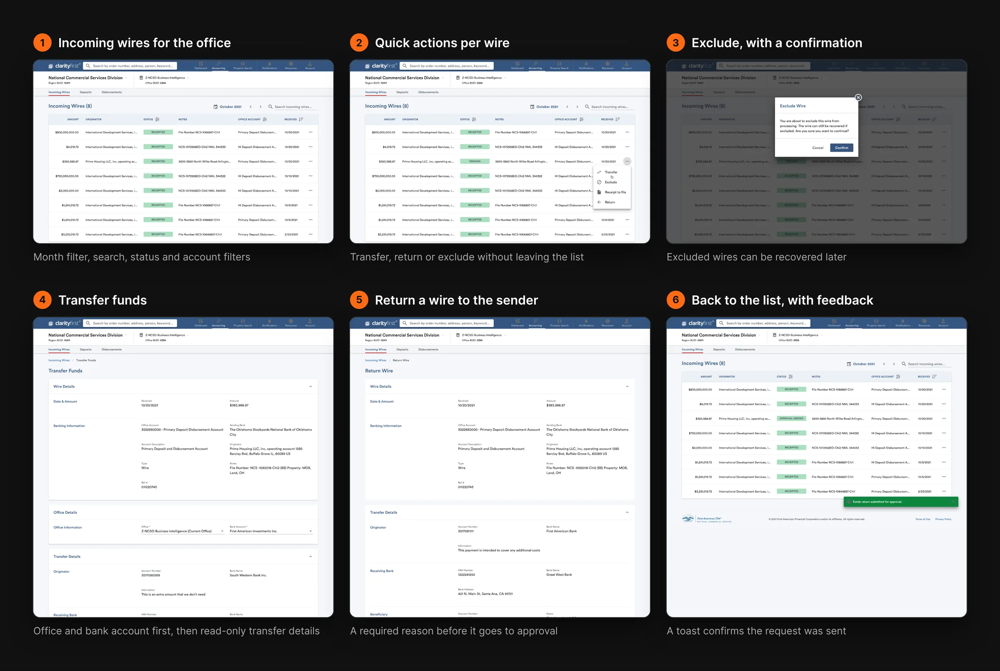
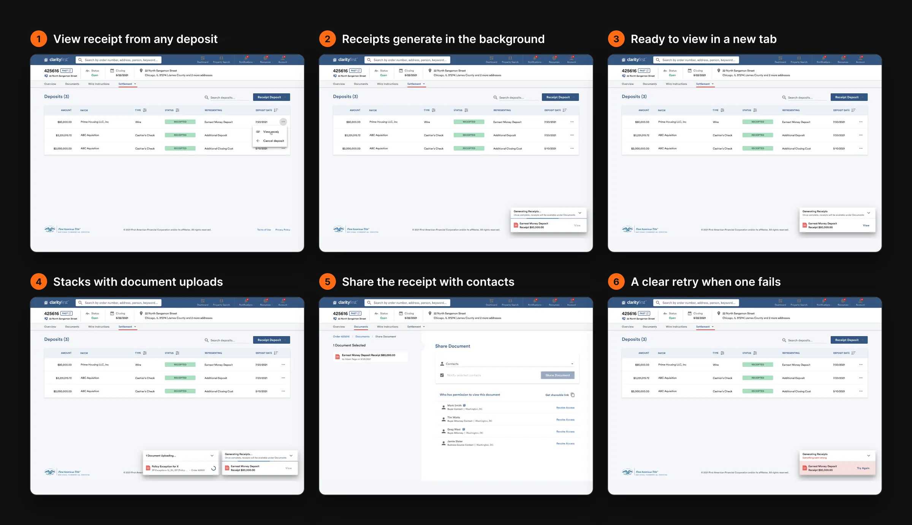
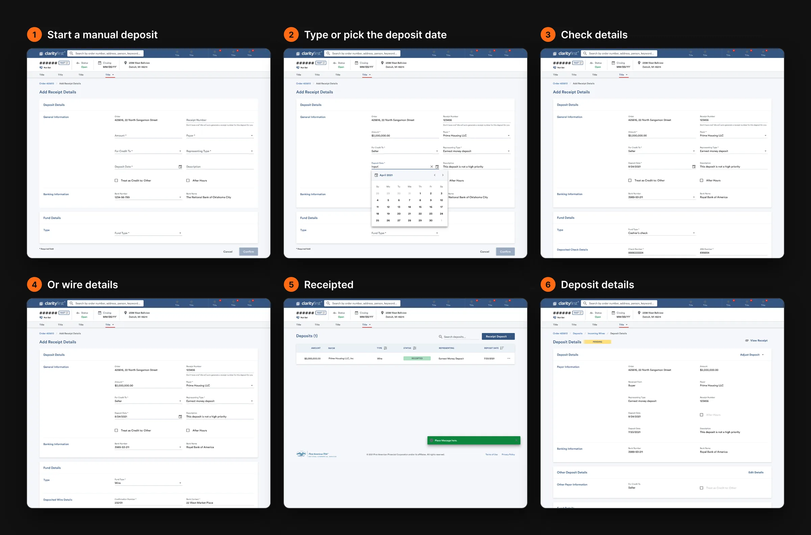
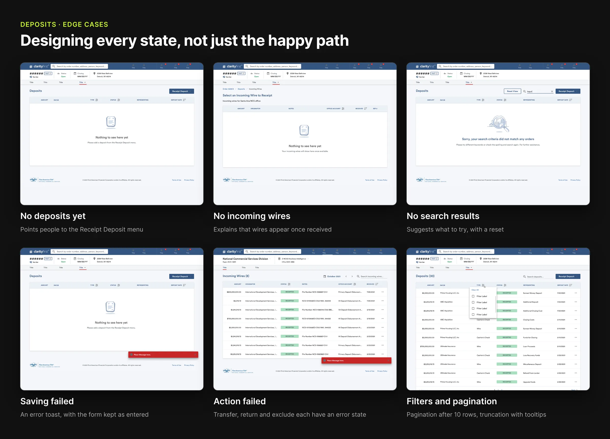

Problem statement
…let escrow teams take an incoming wire from the bank to the right file, or to several files, in a few clear steps, with every dollar accounted for?
Money for a commercial real estate deal arrives as a wire into one of First American's escrow accounts. Someone in the office has to match it to the right order, record who sent it and what it is for, and produce a receipt. In FAST, the legacy system, that took six screens per wire. Splitting one wire across several orders, moving it to another office or sending it back to the bank were separate, hard-to-find tasks.
Role & responsibilities
As the Lead Product Designer, I led the design of the Deposits workflows in ClarityFirst, First American's commercial title and escrow platform, from discovery workshops to developer handoff. I partnered closely with product managers, engineers and First American's escrow and accounting stakeholders, and presented progress to the project's steering committee.
I led a small team of product designers. I ran a weekly grooming session where I assigned tasks, checked on progress and removed any blockers, and reviewed every flow for consistency with the rest of ClarityFirst before anything shipped.
- Owned the deposits experience from discovery workshops to handoff
- Partnered with product managers, engineers and escrow stakeholders
- Annotated every state and rule in Figma for the engineers
From the legacy system to tested flows
- AuditWalked through how FAST handles a wire today
- WorkshopsMapped where the money moves and listed every workflow
- Flow mapsSingle wire to one order, several orders or a multisite
- WireframesAgreed the rules with accounting before visual design
- High-fidelityEvery state annotated for handoff
Auditing FAST & listening to escrow teams
We started with the way a wire is receipted today. In FAST, an escrow officer opens the incoming wires for the business unit, finds the office account for the day, selects the pending record, chooses to receipt it to a file, fills in the required fields and picks what the money represents before saving. We then reviewed our early flows with escrow teams.
- See every incoming wire, check and ACH for their office, with its status and history
- Receipt a deposit into one file, or split it across several
- Transfer, return or exclude a wire without leaving the list

Workshops & workflow mapping
In workshops with the product team and First American's accounting stakeholders, we sketched where the money physically moves: from the buyer's bank into a First American trust account, then into an office, then into a file. Each move became a workflow. We sorted them into three groups and agreed the order with the steering committee.
- Group 1File level
- Group 2Office level
- Group 3Later discovery

For the first workflows I mapped every screen and decision, from the file overview to the generated receipt, with notes on the data each step needs.

Wireframes
The core flow had to be short and predictable, whether someone starts from a file or from the office's incoming wires.
- 1 Select the wire
- 2 Add receipt details
- 3 Split, if needed
- 4 Review & confirm
- 5 Receipt generated
For the office-level actions I worked in greyscale first, so we could agree the business rules with accounting before visual design. Only a wire that hasn't been receipted can be returned: if it has, the deposit is cancelled in the file first. A transfer or return goes to an approval queue, and the approver can't be the person who requested it.

Research, Options & Trade-offs
What research revealed
Escrow teams think bank-first, not file-first: when a wire lands, they go looking for it the way they would in their bank. They recognise a wire by its amount, then by the originator, and want the newest at the top.
Directions explored
- Option A: Start every deposit inside the file, as FAST does. Kept as one way in, but not the only one.
- Option B: Add an office-level Incoming Wires view, reachable straight from ClarityFirst's top navigation, with amount as the first column and the newest wires first. Chosen, alongside the file entry point.
- Running totals: When a wire is split, people need to see what is left to allocate. I explored five layouts for a sticky bar and chose one line: status first, then total, allocated and remaining, next to the actions.
Trade-offs
Receipting several wires into one order, and ACH flows, stayed out of the first release. Receipts are generated in the background and saved to the order's documents rather than shown instantly. Transfers and returns hand off to the Disbursements team's approval screen, which was out of our scope.

High-fidelity designs
In high fidelity, every screen uses ClarityFirst's existing components, colours and text styles, so deposits feel like part of the same product. I reviewed the designs done by the other product designers on the team to keep patterns consistent, and annotated every rule for the engineers: what disables a button and why, where text truncates, when pagination appears.
Every quick action was also tagged for analytics, for example when someone selects Transfer and when they confirm it, so the team could see how often each action is started, completed or abandoned.
Receipt & split a wire
File levelPick an incoming wire, add who sent it, who it is credited to and what it represents, and split it across orders if needed. The sticky bar keeps the total, allocated and remaining amounts in view, and Confirm only unlocks when every split is complete and the amounts add up.

Office incoming wires
Office levelAll the wires coming into an office, filtered by month, status and account. Quick actions let teams transfer a wire to another office or account, return it to the sender or exclude it, each with a confirmation and clear feedback.

Deposit receipts
DocumentsReceipts generate in the background in a small window that stacks with document uploads, so people can keep working. When a receipt is ready it opens in a new tab, and it can be shared with contacts on the order.

Manual deposits
Checks & wiresNot every deposit arrives as an incoming wire. A manual deposit records a check or wire by hand, with a date picker that accepts typing and fields that change with the fund type.

Try it: receipt and split a wire
A working version of the core flow, with sample data. Pick a wire, split it across orders if you like, and watch Confirm unlock once every dollar is allocated.
- 1 Pick a wire
- 2 Add details & split
- 3 Confirm
- 4 Receipt
Order 425616 / Deposits / Incoming Wires
Select an Incoming Wire to Receipt
Newest first · sample dataOrder 425616 / Deposits / Incoming Wires / Add Receipt Details
Add Receipt Details
Deposits (1)
Order 425616 / Deposits
Deposits
Review and confirm
Exclude this wire?
You are about to exclude this wire from processing. It can be recovered later if it was excluded by mistake.
Designing every state
Money workflows need to be explicit about what can go wrong. I designed empty states for deposits, incoming wires and searches, error states for saving, transferring, returning and excluding, and the rules in between: pagination after 10 rows, truncated originators and notes with a tooltip for the full text, and disabled buttons that explain why on hover. Every state was annotated in Figma for the engineers.
